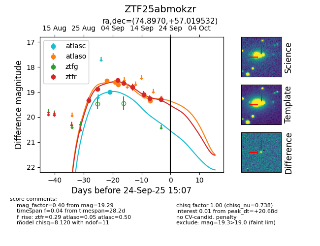

FINK: ZTF25abmokzr
Lasair: ZTF25abmokzr
ALeRCE: ZTF25abmokzr
ZTF25abmokzr (ztf,fink)
equatorial (ra, dec) = (74.8970,+57.01953)
galactic (l, b) = (152.0565,+8.93657)

last atlasc=18.99, atlaso=19.35, ztfr=19.29
1 atlasc, 5 atlaso, 8 ztfr detections